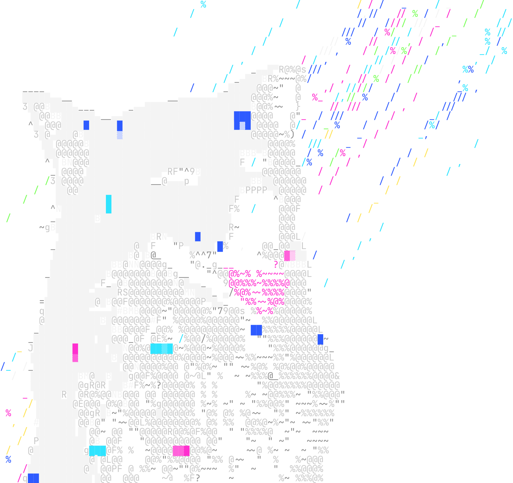
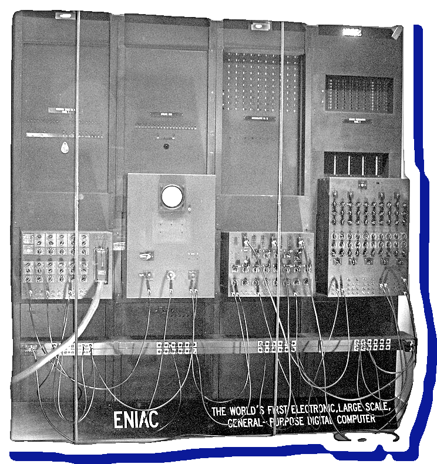

guide.exe —✦— C → Rust —✦— brain
_ □ ×

GUIDE.EXE · แนะแนวรุ่นน้อง ม.ปลาย
How to master and History of problem solving
ภาษาโปรแกรมแก้ปัญหาอะไรมาบ้าง · เริ่มทำแอป เว็บ เกม · ซ้อมแข่งให้สมองจำได้จริง
EVERY LANGUAGE IS VERY SIMPLE IT JUST SOLVES
THE PROBLEM OF ITS ERA AND MAKES YOU PAY
มิช่า จาก วิทยาลัยการคอมพิวเตอร์ มหาลัยขอนแก่น วิทยาการคอมพิวเตอร์
วาระวันนี้ · ประมาณ 2 ชั่วโมงครึ่ง
วันนี้จะคุยกัน 4 เรื่อง
1
ประวัติภาษาโปรแกรม: แต่ละยุคเจอปัญหาอะไร แก้ยังไง
~45 นาที
2
เริ่มต้นยังไง: ภาษาแรก และเส้นทางสายแอป เว็บ เกม
~25 นาที
3
สมองเรียนรู้ยังไง: ความจำ 2 แบบ และเคส HM
~25 นาที
4
ซ้อมแข่งยังไง ให้สมองเก็บเป็นทักษะ
~25 นาที
question_01.txt —✦— Part 1
_ □ ×
✦
✦
คำถามแรก
ภาษาไหนดีที่สุด?
คำตอบของพี่: ไม่มี — แต่ละภาษาเกิดมาเพื่อแก้ปัญหาของยุคมัน
วันนี้เราจะดูว่า แต่ละยุคเจอปัญหาอะไร แก้ยังไง แล้วต้องจ่ายอะไรแลก เข้าใจตรงนี้แล้ว จะเลือกเครื่องมือเป็นเอง
part_1.exe —✦— ปัญหา → ทางแก้
_ □ ×
✦
✦
PART 1 · ~45 นาที
ปัญหา → ทางแก้
→ ราคาที่จ่าย
ประวัติ paradigm และภาษา: Procedural · OOP · C · Java · Go · Rust
PART 1 · ภาพรวม
เส้นเวลาภาษาโปรแกรม 1950–2020
สังเกต: ทุกภาษาใหม่ เกิดจากความเจ็บปวดของภาษาก่อนหน้า
Early developments
ปัญหา โค้ดเป็นเลขล้วน
แก้ ภาษาระดับสูง
ยุคเมนเฟรม · Structured
ปัญหา GOTO พันกัน
แก้ if / loop / ฟังก์ชัน
ยุคพีซี · OOP
ปัญหา ข้อมูลพันกัน
แก้ ข้อมูลมีเจ้าของ
Composition over Inheritance
ปัญหา สืบทอดลึกจนแก้ยาก
แก้ struct + trait · ประกอบแทนสืบทอด
เล่าในวันนี้
ภาษาอื่น
ปี = ปีที่เปิดตัวครั้งแรก
1950
1960
1970
1980
1990
2000
2010
2020
FLOW-MATIC
FORTRAN
Pascal
Simula
C
C++
Haskell
Python
Java
JavaScript
PHP
Go
TypeScript
Rust
Dijkstra: เลิกใช้ GOTO
ERA 0 · 1940s–1950s · ยุคบุกเบิก
EARLY
DEVELOPMENTS
จากการเสียบสายไฟ สู่ภาษาที่คนอ่านออก
ยุคนั้นเครื่องแพง คนถูก — เลยยอมเขียนภาษาที่ยาก แต่ใกล้เครื่องและเร็วที่สุด
1GL
ภาษาเครื่อง (machine code)
เลข 0/1 ที่ CPU รันได้ตรง ๆ · debug ยาก ย้ายเครื่องไม่ได้
2GL
Assembly
ใช้คำย่อแทนเลข คนอ่านง่ายขึ้น · แต่ยังผูกกับเครื่องเดิม
3GL
ภาษาระดับสูง · FORTRAN (1957)
เขียนเป็นสูตร ให้ compiler แปลเป็นภาษาเครื่องให้

ENIAC · 1945
✦
COMPILER · 1952
GRACE
HOPPER
ผู้บุกเบิกแนวคิด compiler
A-0: ให้เครื่อง
ประกอบโปรแกรมเอง
ยุคบุกเบิก · โจทย์ HSR บรรทัดแรก
บรรทัดเดียวกัน 3 ยุค: hp = hp − dmg
1GL · 1940s
ภาษาเครื่อง
A1 00 10 00 00
2B 05 04 10 00 00
A3 00 10 00 00
CPU รันได้ทันที แต่คนอ่านไม่ออก แก้บั๊กยาก และใช้ได้กับ CPU ตระกูลเดียว
→
2GL · ปลาย 1940s
Assembly
mov eax, [hp]
sub eax, [dmg]
mov [hp], eax
ตั้งชื่อแทนเลข อ่านง่ายขึ้นมาก แต่ยังผูกกับ CPU เดิม ย้ายเครื่อง = เขียนใหม่
→
3GL · 1957
FORTRAN
เขียนเป็นสูตร ให้ compiler แปลเป็นภาษาเครื่อง ย้ายเครื่องแค่ compile ใหม่
ทุกขั้น คือย้ายงานยาก ๆ จาก “คน” ไปให้ “เครื่องมือ” ทำแทน
โจทย์ · ใช้ตลอด Part 1
โจทย์: ระบบ HP ของ Honkai: Star Rail ฉบับจิ๋ว
กฎของเกม
2
โดนตี HP ลด แต่ไม่ต่ำกว่า 0
3
ฮีล HP เพิ่ม แต่ไม่เกิน 100
4
HP เหลือ 0 = ล้ม ล้มแล้วฮีลไม่ได้
5
ดื่ม Energy Drink ได้ Energy +20
ด่านทดสอบ
ตา
เหตุการณ์
HP ที่ถูกต้อง
D
ดื่ม Energy Drink
100 · energy 20
B
โดนบอสใช้ท่าใหญ่ 80
0 · ล้ม
H
กินอาหารฮีล 75
0 · ฮีลไม่ได้
โจทย์เดียว เขียนใหม่ทุกยุค:
C + goto
→
C
→
Java
→
Go
→
Rust
ERA 1 · 1960s–1970s · ยุคเมนเฟรม · Structured
STRUCTURED
PROGRAMMING
เลิกกระโดดมั่ว ให้โค้ดอ่านจากบนลงล่าง
ยุคเมนเฟรมเจาะบัตร โปรแกรมใหญ่ขึ้นจน GOTO พัน — ปี 1968 เกิดคำว่า software crisis
BUG
GOTO พันเป็นสปาเกตตี้
แก้จุดหนึ่ง ไปพังอีกจุดที่ไม่รู้ว่าเกี่ยวกัน
FIX
if / loop / ฟังก์ชัน
ตระกูล ALGOL: Pascal (1970) · C (1972)
COST
ข้อมูลยังเป็นของกลาง
ใครก็แก้ได้ → กลายเป็นปัญหาของยุคถัดไป
for (int k = 0; k < 4; k++) {
play(ev[k]);
if (hp <= 0) break;
}
// อ่านบนลงล่าง ไม่มีลูกศร
HSR · ไม่มี goto
✦
LETTER · 1968
EDSGER
DIJKSTRA
Go To Statement Considered Harmful
จุดเริ่มของ structured programming
ยุคแรก · 1950s–1960s
ปัญหาแรก: โค้ดกระโดดไปมาด้วย GOTO
โปรแกรมยุคแรกสั่งให้ “กระโดด” ไปบรรทัดไหนก็ได้
- อ่านต้องไล่ลูกศรไปมา เหมือนเส้นสปาเกตตีพันกัน
- แก้จุดหนึ่ง ไปพังอีกจุดที่ไม่รู้ว่าเกี่ยวกัน
- โปรแกรมยิ่งใหญ่ ยิ่งไม่มีใครกล้าแตะ
ตัวอย่าง: ด่าน HSR ภาษา C · D ดื่ม E ศัตรูตี B บอสตี H ฮีล · มี goto 8 จุด · ลูกศรสีฟ้า = กระโดดย้อนกลับ
#include <stdio.h>
int main(void) {
const char *ev = "DEBH";
int hp = 100, en = 0, k = -1;
/* วนด้วย goto ล้วน ไม่มี loop */
L10: k = k + 1;
if (k > 3) goto L99;
if (ev[k] == 'E') goto L20;
if (ev[k] == 'B') goto L30;
if (ev[k] == 'H') goto L40;
en = en + 20; goto L50;
L20: hp = hp - 90; goto L50;
L30: hp = hp - 80; goto L50;
L40: hp = hp + 75;
L50: printf("%c %d\n", ev[k], hp);
if (hp > 0) goto L10;
L99: return 0;
}
Edsger Dijkstra
ถอดความจากจดหมายปี 1968
1966–1968
วิกฤตซอฟต์แวร์ และทางออก 3 โครงสร้าง
ปี 1968 ที่ประชุมวิศวกรรมซอฟต์แวร์ของ NATO ใช้คำว่า software crisis — โปรเจกต์ช้า เกินงบ และบั๊กเต็มไปหมด
ปีเดียวกัน Edsger Dijkstra เขียนจดหมาย Go To Statement Considered Harmful ส่วน Böhm กับ Jacopini พิสูจน์ไว้ตั้งแต่ 1966 ว่าโปรแกรมใดก็เขียนได้ด้วยแค่ 3 โครงสร้าง
ลำดับ
SEQUENCE
ทำทีละบรรทัด จากบนลงล่าง
เลือก
SELECTION
if / else ตามเงื่อนไข
วนซ้ำ
ITERATION
for / while จนครบเงื่อนไข
ทางแก้ที่ 1 · Procedural
แตกปัญหาใหญ่ เป็นฟังก์ชันเล็ก ๆ
- คิดแบบ top-down: งานใหญ่ → งานย่อย → ฟังก์ชัน
- ตั้งชื่อฟังก์ชันให้บอกว่าทำอะไร แล้วเรียกใช้ซ้ำได้
- อ่านตามลำดับได้ ไม่มีการกระโดดมั่ว
- ภาษาตัวแทน: C, Pascal และ FORTRAN รุ่นหลัง
int sum(int a[], int n) {
int s = 0;
for (int i = 0; i < n; i++)
s += a[i];
return s;
}
int main() {
int a[] = {3, 1, 4};
printf("%d", sum(a, 3));
}
C · 1972
C: ภาษาที่สร้างมาเพื่อเขียน Unix
Dennis Ritchie ที่ Bell Labs · ปี 1973 เขียนเคอร์เนล Unix ใหม่ด้วย C
ปัญหา
- ระบบปฏิบัติการ เขียนด้วย assembly
- assembly ผูกกับเครื่อง รุ่นเดียว ย้ายเครื่อง = เขียนใหม่หมด
ทางแก้
- ภาษาระดับสูง พออ่านรู้เรื่อง แต่ใกล้ฮาร์ดแวร์ พอเขียน OS ได้
- ย้ายเครื่อง แค่ compile ใหม่
ยังเห็นวันนี้
- Linux และแกนของ Windows
- เฟิร์มแวร์ ในเครื่องใช้ไฟฟ้า
- syntax ที่ C++ Java Go Rust ยืมไปใช้
ราคาที่ต้องจ่าย
ราคาของ C: เราดูแลหน่วยความจำเอง
char *name = malloc(8);
strcpy(name, "Somchai Jaidee");
free(name);
printf("%s", name);
กิจกรรม: โค้ดนี้มีบั๊กร้ายแรง 2 จุด หาเจอไหม?
~70%
ของช่องโหว่ความปลอดภัยที่ Microsoft แพตช์แต่ละปี มาจากปัญหา memory safety
Matt Miller, Microsoft Security Response Center · BlueHat IL 2019
ERA 2 · 1980s–2000s · ยุคพีซี · OOP
OBJECT
ORIENTED
ให้ข้อมูลมีเจ้าของ
ยุคพีซี โปรแกรมใหญ่เป็นแสนบรรทัด ทีมเป็นร้อยคน ข้อมูลกลางถูกแก้จากทุกไฟล์
BUG
ข้อมูลพันกันทั้งโปรแกรม
hp ถูกแตะจากเป็นร้อยจุด กฎไม่ตรงกัน
FIX
class = ข้อมูล + เมธอดที่คุมกฎ
Simula (1967) → Smalltalk → C++ (1985)
COST
สืบทอดลึกจนแก้ยาก
ต้นไม้คลาสงอกไม่หยุด
class Ally {
int hp = 100; // private
public:
void takeDamage(int d);
};
C++ · 1985
✦
C++ · 1985
BJARNE
STROUSTRUP
สร้าง C++ ที่ Bell Labs
เอา class มาใส่ในภาษา C
1970s–1980s · ลองนึกถึงเกมแบบ Honkai: Star Rail
ปัญหาต่อไป: โปรแกรมใหญ่ขึ้น ข้อมูลพันกัน
int hp = 100;
← HP ตัวละคร เป็นตัวแปรกลางใน src/game.h ทุกไฟล์ include แล้วแก้ได้หมด
ทีมศัตรู
src/enemy/attack.c
void onHit(int dmg) {
hp -= dmg;
}
โดนตี = ลดเลือด จบ
ทีมไอเทม
src/items/food.c
void useFood() {
hp += 75;
}
กินอาหาร = เพิ่มเลือด จบ
ทีมตัวละคร
src/ally/update.c
void update() {
if (hp == 0) die();
}
เลือดหมด = ล้ม จบ
ทุกคนเขียน “ถูก” ในมุมของตัวเอง… แต่ไม่มีใครเป็นเจ้าของ hp
ด่านจริง · เปิดเกมเล่น 1 ด่าน
บั๊กตัวละครอมตะ: เลือดติดลบแต่ไม่ล้ม
2
โดนศัตรูตี 3 hit ครั้งละ 30
onHit(30) ×3
10
3
if (hp == 0) die();
10 · ยังไม่ล้ม (ถูก)
5
if (hp == 0) die();
−70 · ไม่ล้ม!
6
useFood()
5 · ล้มแล้วฟื้น?!
จะแก้ไฟล์ไหนดี? ดูก่อนว่าในเกมจริง hp ถูกแตะกี่ที่ →
โปรเจกต์เกมจริง · ตัวอย่างสมมติ
ค้นคำว่า hp ทั้งโปรเจกต์ เจออะไรบ้าง
$ grep -rn "hp" src/
src/enemy/attack.c:142: hp -= dmg;
src/enemy/boss_ult.c:88: hp -= 120;
src/enemy/aoe_blast.c:57: hp -= blast_dmg(adjacent);
src/status/burn.c:31: hp -= dot_dmg(stacks);
src/status/bleed.c:76: hp -= max_hp / 4;
src/ally/hp_cost.c:23: hp -= max_hp * 30 / 100;
src/items/food.c:31: hp += 75;
src/heal/skill_heal.c:19: hp += heal_amount;
src/combat/revive.c:65: hp = max_hp / 2;
src/ally/update.c:12: if (hp == 0) die();
src/net/sync.c:201: hp = packet.hp;
src/ui/hp_bar.c:88: draw_bar(hp / 100.0);
src/battle/turn_order.c:140: if (hp <= 0) skip_turn();
… และอีก 200+ บรรทัด ใน 80 ไฟล์
ตัวเลขสมมติ เกมจริงอาจใหญ่กว่านี้อีก
เจอการเช็กล้ม 2 แบบ
update.c hp == 0
turn_order.c hp <= 0
คนละคน คิดคนละแบบ — แบบไหนคือ “ล้ม” จริง?
ยังคิดว่า แก้ไฟล์เดียวจบไหม?
ทางแก้ที่ 2 · 1967 → 1985
Object-Oriented Programming
ไอเดีย: ให้ข้อมูลมีเจ้าของ — Ally เก็บ hp ไว้เอง คนอื่นแก้ได้แค่ผ่าน takeDamage() กับ heal()
Simula 67
Ole-Johan Dahl และ Kristen Nygaard (นอร์เวย์) สร้างไว้จำลองระบบจริง มี class และ object เป็นภาษาแรก ๆ
Smalltalk
Alan Kay และทีมที่ Xerox PARC ยุค 1970s ผู้ตั้งคำว่า object-oriented ทุกอย่างเป็น object
C++
Bjarne Stroustrup เอา class ใส่ลงใน C ออกขายปี 1985 ได้ความเร็วแบบ C กับการจัดโค้ดแบบ OOP
หัวใจของ OOP · เกม HSR ของเรา
4 หลักของ OOP
ซ่อน hp ไว้ใน Ally แก้ได้ผ่านเมธอดเท่านั้น
Item บอกแค่ว่า “ใช้ได้” ไม่ต้องรู้ว่าข้างในทำอะไร
Food กับ EnergyDrink สืบทอดจาก Item
สั่ง it.use(me) เหมือนกัน แต่แต่ละชิ้นทำต่างกัน
class Ally {
private int hp = 100;
void heal(int n) { ... }
void addEnergy(int n) { ... }
}
abstract class Item {
abstract void use(Ally a);
}
class Food extends Item {
void use(Ally a) { a.heal(75); }
}
class EnergyDrink extends Item {
void use(Ally a) { a.addEnergy(20); }
}
for (Item it : inventory) it.use(me);
1
2
3
3
4
เทียบทีละหลัก · C แบบ procedural กับ Java แบบ OOP
ถ้าไม่มี OOP จะเขียนยังไง?
ไม่มี OOP · C แบบ procedural
struct Ally { int hp; };
a->hp = -70;
// compile ผ่าน ใครก็แก้ได้
private int hp = 100;
a.hp = -70;
// compile error แตะตรงไม่ได้
a->hp += 75;
if (a->hp > 100) a->hp = 100;
// ทุกจุดที่เรียกต้องจำกฎเอง
a.heal(75);
// กฎ 0–100 ซ่อนอยู่ใน heal()
struct Food { char *name; int qty; };
struct Drink { char *name; int qty; };
// field ซ้ำ ต้อง copy ทุกไอเทม
class Food extends Item {}
class Drink extends Item {}
// name, qty ได้มาจาก Item
switch (it->type) {
case FOOD: ...; case DRINK: ...;
} // ไอเทมใหม่ = แก้ทุก switch
it.use(me);
// ไอเทมใหม่ = เพิ่ม class เดียว
ไม่มี OOP ก็เขียนได้ — แต่ต้องพึ่งวินัยของคนทั้งทีม
หลังใช้ OOP · เล่นด่านเดิมอีกรอบ
บั๊กอมตะหายไป: ล้มเมื่อควรล้ม
2
โดนศัตรูตี 3 hit ครั้งละ 30
a.takeDamage(30) ×3
10
3
a.isDead()
10 · ยังไม่ล้ม (ถูก)
4
a.takeDamage(80)
0 · ไม่ติดลบแล้ว
5
a.isDead()
0 · ล้ม (ถูก!)
6
a.heal(75)
0 · ฮีลไม่ได้
แก้ที่เดียวใน Ally — ทั้ง 200 จุดในเกมได้กฎเดียวกันทันที
โปรแกรมเดียวกัน: สร้างตัวละคร → โดนบอสตี 80 → ลองแก้ hp เป็น −70 ตรง ๆ → พิมพ์เลือด
C กับ Java: เกม HSR ฉบับเดียวกัน
C
procedural · ข้อมูลกับฟังก์ชันแยกกัน
#include <stdio.h>
#include <stdlib.h>
typedef struct { int hp; } Ally;
void take_damage(Ally *a, int dmg) {
a->hp -= dmg;
if (a->hp < 0) a->hp = 0;
}
int main(void) {
Ally *a = malloc(sizeof *a);
a->hp = 100;
take_damage(a, 80);
a->hp = -70; // แก้ตรงได้!
printf("%d\n", a->hp);
free(a); // ต้องคืนเอง
}
ผลลัพธ์: -70 (บั๊กกลับมา)
Java
OOP · ข้อมูลกับเมธอดอยู่ใน class เดียวกัน
class Ally {
private int hp = 100;
void takeDamage(int dmg) {
hp = Math.max(0, hp - dmg);
}
int getHp() { return hp; }
}
public class Main {
public static void main(String[] a) {
Ally a = new Ally();
a.takeDamage(80);
// a.hp = -70; ← compile error
System.out.println(a.getHp());
} // ไม่ต้อง free: GC เก็บให้
}
Class = ข้อมูล + เมธอด
Encapsulation: ซ่อน hp
Method: คำสั่งของ object
Object: ของจริงจากแม่พิมพ์
Abstraction: ไม่ต้องรู้ข้างใน
ผลลัพธ์: 20 (ถูกต้อง)
ราคาที่ต้องจ่าย
ราคาของ OOP: ต้นไม้คลาสที่ลึกเกินไป
GameObject
└─ Character
└─ Ally
└─ DestructionAlly
└─ TrailblazerV2
- แก้ Character ทีเดียว ลูกหลานพังทั้งตระกูล
- โค้ดยาว มีพิธีเยอะ (boilerplate)
Joe Armstrong (ผู้สร้างภาษา Erlang) เปรียบไว้ว่า อยากได้แค่กล้วยลูกเดียว แต่ได้กอริลลาที่ถือกล้วย พร้อมทั้งป่ามาด้วย
บทเรียนที่วงการได้: ใช้การประกอบ (composition) มากกว่าการสืบทอด — หนังสือ Design Patterns, 1994
ERA 3 · 2000s–ปัจจุบัน · Composition over Inheritance
COMPOSITION
> INHERITANCE
ประกอบชิ้นส่วน ดีกว่าสืบทอด
หลักการจากหนังสือ Design Patterns (1994) ที่ Go กับ Rust ใส่ลงไปในตัวภาษาเลย
BUG
สืบทอดลึกจนแก้ยาก
แก้คลาสแม่ทีเดียว ลูกหลานพังทั้งตระกูล
FIX
struct + interface/trait + ประกอบชิ้นส่วน
Go (2009) · Rust (2015): ตัด class inheritance ทิ้ง
COST
ไม่มีคลาสแม่ให้รับโค้ดมาฟรี
บางอย่างต้องเขียน impl เองทีละชนิด
struct Memosprite {
health: Health, // มี
speed: Speed, // มี
} // ไม่ได้ “เป็น” ตัวละคร
RUST · 2015
✦
GO 2009 · RUST 2015
GO &
RUST
Go: Griesemer, Pike, Thompson ที่ Google
Rust: Graydon Hoare · Mozilla สนับสนุน
Go · 2009
Go: ภาษาเรียบ ๆ สำหรับระบบใหญ่
Robert Griesemer, Rob Pike และ Ken Thompson (คนร่วมสร้าง Unix) ที่ Google
ปัญหา
- โค้ด C++ ที่ Google ใหญ่ จน compile นานมาก
- เซิร์ฟเวอร์ ต้องรับงานพร้อมกัน จำนวนมหาศาล
ทางแก้
- ภาษาเล็ก กฎน้อย compile เร็ว
- goroutine + channel ทำงานพร้อมกันง่าย
- ได้ไฟล์เดียว เอาไปรันได้เลย
ยังเห็นวันนี้
- Docker และ Kubernetes
- backend และระบบ cloud
Go · เกม HSR ฉบับ Go
OOP แบบ Go: ไม่มี class ไม่มี extends
ตัวพิมพ์เล็ก hp = ซ่อนไว้ ใช้ได้แค่ใน package
interface Item บอกแค่ว่า ต้องมี Use()
3
Composition (แทน Inheritance)
ไม่มี extends ฝัง Health ไว้ใน Memosprite แทน
มี Use() ก็นับเป็น Item อัตโนมัติ
type Ally struct {
hp int // ตัวเล็ก = private
}
func (a *Ally) TakeDamage(d int) {
a.hp = max(0, a.hp-d)
}
type Item interface { Use(a *Ally) }
type Food struct{}
func (Food) Use(a *Ally) { a.Heal(75) }
type Health struct{ HP int }
type Memosprite struct { Health } // ฝัง
for _, it := range inventory {
it.Use(me)
}
1
2
3
4
4
Rust · 2015
Rust: เร็วแบบ C และปลอดภัยกว่า
เริ่มปี 2006 โดย Graydon Hoare · Mozilla สนับสนุนตั้งแต่ 2009 · 1.0 ปี 2015
ปัญหา
- อยากเร็วแบบ C/C++ แต่ไม่เอาบั๊กหน่วยความจำ
- ไม่อยากมี GC มาหยุดโปรแกรม
ทางแก้
- ownership + borrowing: ทุกค่ามีเจ้าของ
- compiler ตรวจก่อน มีโอกาสพัง = ไม่ให้ผ่าน
ยังเห็นวันนี้
- Linux kernel: รับเข้า v6.1 (2022) เลิกสถานะทดลอง ธ.ค. 2025
- Firefox, Android และบางส่วนของ Windows
Stack Overflow Developer Survey: Rust ได้อันดับ 1 ภาษาที่ผู้ใช้อยากใช้ต่อ (most admired) ต่อเนื่องหลายปี
Rust · เกม HSR ฉบับ Rust
OOP แบบ Rust: struct + trait แทน class
ไม่ใส่ pub = ซ่อน hp ไว้ แตะได้แค่ใน module
trait Item บอกแค่ว่า ต้องมี use_on()
3
Composition (แทน Inheritance)
ไม่มี extends ใส่ Health ไว้ใน Memosprite แทน
ต้องเขียน impl Item for ... ให้ชัด แล้วใส่คลังไอเทมเดียวกันได้
pub struct Ally {
hp: i32, // ไม่มี pub = private
}
trait Item {
fn use_on(&self, a: &mut Ally);
}
struct Food;
impl Item for Food {
fn use_on(&self, a: &mut Ally) {
a.heal(75);
}
}
struct Health { hp: i32 }
struct Memosprite { health: Health } // มี
for it in &inventory { it.use_on(&mut me); }
1
2
3
4
4
ownership
Rust: ส่งต่อ = ย้ายเจ้าของ
- ทุกค่ามีเจ้าของคนเดียว เจ้าของหายไป ค่าถูกคืนอัตโนมัติ
- ยืมได้ด้วย & — อ่านพร้อมกันหลายคน หรือแก้ได้ทีละคน
- ผิดกฎ = compile ไม่ผ่าน บั๊กไม่หลุดไปถึงผู้ใช้
ราคาที่ต้องจ่าย
เรียนยาก ช่วงแรกจะ “ทะเลาะกับ borrow checker” และ compile ช้ากว่า Go
fn main() {
let a = String::from("hi");
let b = a; // ย้ายไป b
println!("{}", a); // error!
}
error[E0382]: borrow of moved value: `a`
สรุป Part 1
ทุกทางแก้ มีราคาที่ต้องจ่าย
| ภาษา | ปี | แก้ปัญหาอะไร | จ่ายอะไรแลก |
|---|
| C | 1972 | เขียน OS ให้ย้ายเครื่องได้ | ดูแลหน่วยความจำเอง |
| C++ | 1985 | ความเร็ว C + จัดโค้ดแบบ object | ภาษาใหญ่ และซับซ้อน |
| Go | 2009 | compile เร็ว ทำงานพร้อมกันง่าย | จงใจเรียบ ขาดบางฟีเจอร์ |
| Rust | 2015 | เร็ว + ปลอดภัย โดยไม่มี GC | เรียนยาก compile ช้า |
Paradigm ≠ ภาษา
Paradigm คือ “วิธีคิด” ไม่ใช่ตัวภาษา
Imperative
บอกคอม “ทีละขั้น” ว่าต้องทำอะไร เช่น procedural (C) และ OOP (Java)
total = 0
for x in xs:
if x > 0:
total += x * x
Declarative
บอกคอมว่า “อยากได้อะไร” เช่น functional (Haskell) และ SQL
total = sum(x * x
for x in xs
if x > 0)
ภาษาสมัยใหม่ส่วนใหญ่เป็น multi-paradigm — Python, Rust, JavaScript เขียนได้หลายแบบในภาษาเดียว
lesson.txt —✦— Part 1
_ □ ×
✦
✦
บทเรียนจาก Part 1
ไม่มีกระสุนเงิน
Fred Brooks (1986): ไม่มีเทคนิคไหนตัวเดียว ที่ทำให้การสร้างซอฟต์แวร์ง่ายขึ้นแบบก้าวกระโดด
ทุกครั้งที่เจอภาษาหรือเครื่องมือใหม่ ถาม 2 ข้อ: เกิดมาแก้ปัญหาอะไร? และเราต้องจ่ายอะไรแลก?
part_2.exe —✦— เริ่มต้นยังไง
_ □ ×
✦
✦
PART 2 · ~25 นาที
เริ่มต้นยังไง:
แอป เว็บ เกม
ภาษาแรก · เครื่องมือ · เส้นทางแต่ละสาย · แผน 12 สัปดาห์
ก้าวแรก
ภาษาแรก: เลือกตามสิ่งที่อยากได้
Python
อยากเข้าใจ logic เร็ว ๆ ไม่ติด syntax
เหมาะกับ
เริ่มจากศูนย์ · AI · สคริปต์
C / C++
อยากรู้ว่าคอมทำงานยังไงจริง ๆ หน่วยความจำ pointer
เหมาะกับ
สายแข่ง · ระบบ · embedded
JavaScript
อยากเห็นผลบนเว็บทันที เปิดเบราว์เซอร์ก็รันได้
เหมาะกับ
สายเว็บ · แอปข้ามแพลตฟอร์ม
เลือกหนึ่งภาษา แล้วอยู่กับมันให้ได้ 3 เดือน — ภาษาที่สองจะง่ายขึ้นมาก
สายเว็บ
สายเว็บ: จากหน้าเดียว สู่เว็บที่ใช้จริง
01
HTML + CSS
โครงสร้างหน้าเว็บ และการจัดหน้าตา
02
JavaScript
ทำให้ปุ่มกดได้ ข้อมูลบนหน้าเปลี่ยนได้
03
TypeScript + Framework
React, Vue หรือ Svelte ช่วยจัดเว็บที่ใหญ่ขึ้น
04
Backend + Database
Python, Go หรือ Node.js กับ SQL สำหรับเก็บข้อมูล
05
Deploy
เอาขึ้นอินเทอร์เน็ต ให้คนอื่นเปิดได้
โปรเจกต์แรกที่แนะนำ
- หน้าเว็บแนะนำตัวเอง
- to-do list ที่ปิดเว็บแล้ว ข้อมูลไม่หาย
- เว็บที่เพื่อนในห้องใช้จริง เช่น ตารางเวร โหวตเมนู
เริ่มจาก HTML/CSS/JS ล้วน ๆ ก่อน แล้วค่อยไป framework
สายแอปมือถือ
สายแอป: เขียนครั้งเดียว ได้สองระบบ
01
เลือก framework
Flutter (ภาษา Dart) หรือ React Native (JavaScript/TypeScript)
02
หน้าจอ (UI)
ปุ่ม รายการ ฟอร์ม และการเปลี่ยนหน้า
03
เก็บข้อมูลในเครื่อง
ปิดแอปแล้ว ข้อมูลยังอยู่
04
ต่อ API / backend
ดึงข้อมูลจากอินเทอร์เน็ต หรือแชร์ข้อมูลกับเพื่อน
05
ให้คนอื่นลองใช้
ส่งไฟล์ติดตั้งให้เพื่อนลอง หรือส่งขึ้นสโตร์
โปรเจกต์แรกที่แนะนำ
- แอปจดรายรับรายจ่าย
- นับถอยหลังวันสอบ
- flashcard ทวนศัพท์ แบบเว้นระยะ
อยากลงลึก native: Kotlin สำหรับ Android, Swift สำหรับ iOS (ต้องใช้ Mac)
สายเกม
สายเกม: เริ่มจากเข้าใจ game loop
01
เข้าใจ game loop
รับ input → อัปเดตสถานะ → วาดจอ วนราว 60 รอบต่อวินาที
02
เริ่มเล็ก
Scratch หรือ Pygame ทำเกมจอเดียวให้จบ
03
เลือก engine
Godot (ฟรี โอเพนซอร์ส ภาษา GDScript คล้าย Python) · Unity (C#) · Unreal (C++)
04
ทำให้ “รู้สึกดี”
เสียง เอฟเฟกต์ และความยากที่พอดี
05
Game jam
สร้างเกมให้จบในเวลาจำกัด เช่น 48 ชั่วโมง กับเพื่อน
โปรเจกต์แรกที่แนะนำ
- Pong
- Flappy Bird ฉบับของเรา
- platformer 1 ด่าน
ชอบ Rust: ลอง engine ชื่อ Bevy
ยังมีอีก
สายอื่นที่น่าสนใจ
AI / Data
Python · NumPy · pandas
คณิต ม.ปลาย สำคัญมาก: สถิติ เมทริกซ์ แคลคูลัส
Systems / Embedded
C · Rust · Arduino · ESP32
เขียนโปรแกรมคุมของจริง: เซนเซอร์ มอเตอร์ หุ่นยนต์
Backend / Cloud
Go · Python · Database · Linux
ระบบหลังบ้าน ที่รองรับคนใช้พร้อมกันเยอะ ๆ
Security
เข้าใจระบบให้ลึก + จริยธรรม
ฝึกแบบถูกกฎหมาย ผ่านการแข่ง CTF
ทำโปรเจกต์
สูตรทำโปรเจกต์ ไม่ให้ค้างกลางทาง
1
เล็กพอให้เสร็จได้ใน 1 สัปดาห์
2
ทำให้ใช้ได้ก่อน แล้วค่อยทำให้สวย
3
ให้คนอื่นลองใช้ แล้วฟัง feedback
4
เพิ่มทีละฟีเจอร์ และ commit ทุกครั้ง
ระวัง Tutorial Hell
ดูคลิปสอนวนไปเรื่อย ๆ รู้สึกว่าเข้าใจ แต่พอเปิดจอว่าง กลับเขียนเองไม่ได้
กฎง่าย ๆ: ดูคลิป 1 ชั่วโมง ต้องเขียนเองอย่างน้อย 2 ชั่วโมง
สัปดาห์ 1–3
พื้นฐานภาษา
- ตัวแปร if loop ฟังก์ชัน
- แก้โจทย์ง่าย วันละข้อ
สัปดาห์ 4–6
ข้อมูลหลายตัว
- list, string, dict
- เริ่มใช้ Git
สัปดาห์ 7–9
โปรเจกต์แรก
- เลือกสาย เว็บ แอป หรือเกม
- ทำ 1 ชิ้นให้จบ
สัปดาห์ 10–12
ปล่อย + ต่อยอด
- ให้เพื่อนลองใช้
- เริ่มโจทย์อัลกอริทึม
วันละ 45–60 นาที ทุกวัน ดีกว่าอัด 7 ชั่วโมงในวันเสาร์วันเดียว — Part 3 จะเฉลยว่าทำไม
break.exe —✦— 10:00
_ □ ×
✦
✦
พัก 10 นาที
ระหว่างพัก สมองยังทำงานต่อ — เดี๋ยวกลับมาเล่าว่ามันทำอะไรอยู่
part_3.exe —✦— สมองเรียนรู้
_ □ ×
✦
✦
PART 3 · ~25 นาที
ก่อนซ้อมแข่ง:
สมองเรียนรู้ยังไง
ความจำ 2 แบบ · เคส HM · การนอน · วิธีเรียนที่ได้ผลจริง
ความจำ 2 แบบ
Short-term กับ Long-term
Short-term
ความจำระยะสั้น / working memory
- ที่พักชั่วคราว อยู่ไม่กี่วินาทีถึงนาที
- จุได้ราว 4 ก้อน (Cowan, 2001)
- ตัวเลขเดิมที่ดัง: 7 ± 2 (Miller, 1956)
Long-term
ความจำระยะยาว
- ที่เก็บถาวร อยู่ได้เป็นปี
- ความจุแทบไม่จำกัด
- ต้องผ่านการ “เข้ารหัส” ถึงจะเข้าไปได้
โมเดลความจำของ Atkinson & Shiffrin (1968) · ดึงความรู้จาก long-term กลับมาใช้ เรียกว่า retrieval
กิจกรรม · 1 นาที
ลองจำตัวเลขชุดนี้
1 9 7 2 1 9 9 5 2 0 1 5
ดู 10 วินาที แล้วหลับตา ลองท่องกลับให้ครบ 12 ตัว
1972 · 1995 · 2015
12 ตัวแยกกัน = เกินที่ short-term จุได้ แต่พอจับเป็น 3 ก้อนที่มีความหมาย (ปีเกิดของ C, Java, Rust จาก Part 1) จำง่ายขึ้นทันที — นี่คือ chunking
เคสที่เปลี่ยนวงการประสาทวิทยา
HM: ชายที่สร้างความจำใหม่ไม่ได้
Henry Molaison (1926–2008)
- ลมชักรุนแรงตั้งแต่เด็ก ยาเอาไม่อยู่
- ปี 1953 ศัลยแพทย์ William Scoville ผ่าตัดเอาสมองส่วนขมับด้านใน (medial temporal lobe) ทั้งสองข้างออก รวมถึง hippocampus
- ลมชักดีขึ้น แต่…
สรุป: hippocampus คือด่านที่ย้ายความจำ จาก short-term ไป long-term
เสียไป
สร้างความจำระยะยาวใหม่ไม่ได้ คุยกันเสร็จ ไม่นานก็ลืมว่าเคยเจอ
ยังอยู่
short-term ปกติ คุยต่อเนื่องได้ จำตัวเลขสั้น ๆ ได้
ยังอยู่
ความจำเก่าก่อนผ่าตัด ส่วนใหญ่ยังจำได้
แต่มีเรื่องที่แปลกกว่านั้น
HM วาดผ่านกระจก เก่งขึ้นทุกวัน
mirror tracing: ลากเส้นระหว่างขอบดาว 2 ชั้น โดยมองมือตัวเองผ่านกระจกเท่านั้น
วันที่ 1
ทำผิดเยอะ เพราะภาพในกระจกกลับด้าน
วันที่ 2
ผิดน้อยลง แต่บอกว่า “ไม่เคยทำมาก่อน”
วันที่ 3
ทำได้ดีขึ้นอีก และยังจำไม่ได้ว่าเคยฝึก
การทดลองของ Brenda Milner (ตีพิมพ์ปี 1962)
ทักษะถูกเก็บด้วยสมองอีกระบบ ที่ไม่ต้องพึ่ง hippocampus
ความจำระยะยาว
ความจำระยะยาว มี 2 ระบบ
Long-term memory
Declarative · “รู้ว่า”
พูดออกมาเป็นคำได้ · อาศัย hippocampus
Procedural · “รู้วิธี”
ทำได้ด้วยการลงมือ · อาศัย basal ganglia และ cerebellum
Episodic
เหตุการณ์ที่เคยเจอ เช่น เมื่อวานกินอะไร
Semantic
ข้อเท็จจริง เช่น C เกิดปี 1972
ทักษะ (skill)
ขี่จักรยาน พิมพ์สัมผัส เห็นโจทย์แล้วรู้ว่าต้องใช้ DP — ทำได้ แต่อธิบายเป็นคำพูดยาก
แปลว่าอะไรกับเรา
เขียนโปรแกรมเป็นทักษะ ไม่ใช่แค่ความรู้
รู้ว่า
declarative
- จำ syntax ได้
- รู้ว่า DP คืออะไร
- ดูคลิปเฉลยแล้วเข้าใจ
ทำได้
procedural
- เปิดจอว่าง แล้วเขียนเองได้
- เห็นโจทย์ แล้วนึกออกว่าใช้ DP
- debug เองจนเจอบั๊ก
ดูคลิปว่ายน้ำ 100 ชั่วโมง ก็ยังว่ายไม่เป็น — ต้องลงน้ำ
สองระบบต้องใช้คู่กัน: รู้หลักการก่อน แล้วฝึกซ้ำจนเป็นทักษะ
ปุ่ม save ของสมอง
การนอน = กด Save
ตอนหลับ สมองเล่นซ้ำสิ่งที่เรียนตอนกลางวัน แล้วค่อย ๆ ย้ายไปเก็บระยะยาว
เซลล์ใน hippocampus ของหนู ยิงสัญญาณรูปแบบเดิมซ้ำตอนหลับ (Wilson & McNaughton, 1994)
ทักษะดีขึ้นหลังนอน โดยไม่ต้องฝึกเพิ่ม
คนที่ฝึกกดนิ้วตามลำดับ ทำได้เร็วขึ้นหลังนอนหนึ่งคืน แต่ไม่ดีขึ้นแบบนั้นเมื่อตื่นอยู่ช่วงเวลาเท่ากัน (Walker และทีม, 2002)
8–10
ชั่วโมงต่อคืน สำหรับวัยรุ่นอายุ 13–18 ปี
คำแนะนำของ American Academy of Sleep Medicine
อดนอนติวก่อนแข่ง = เรียนแล้วไม่ได้ save
ลืมเป็นเรื่องปกติ
Forgetting curve และการทวนแบบเว้นระยะ
จำได้มาก
ทวนเว้นระยะ
ไม่ทวนเลย
เรียน
1 วัน
3 วัน
1 สัปดาห์
1 เดือน
Hermann Ebbinghaus (1885) ทดลองจำพยางค์ไร้ความหมายกับตัวเอง: ลืมเร็วมากในช่วงแรก แล้วค่อย ๆ ช้าลง
ทวนแต่ละครั้ง → เส้นลืมลาดลงช้ากว่าเดิม
จังหวะทวนตัวอย่าง
1 วัน → 3 วัน → 1 สัปดาห์ → 1 เดือน
กราฟเป็นภาพประกอบแนวโน้ม ไม่ใช่ข้อมูลจริง
เรียนยังไงให้จำจริง
วิธีเรียนที่งานวิจัยบอกว่าได้ผล
ได้ผลจริง
- ทดสอบตัวเอง: ปิดหนังสือแล้วนึก หรือทำโจทย์ (retrieval practice)
- ทวนแบบเว้นระยะ (spaced practice)
- สลับหัวข้อตอนฝึก (interleaving) — ได้ผลระดับกลาง
- ฝึกที่ขอบความสามารถ และมี feedback (deliberate practice)
รู้สึกว่าได้ผล แต่ได้ผลน้อย
- อ่านซ้ำหลายรอบ
- ไฮไลต์ ขีดเส้นใต้ทั้งหน้า
- สรุปความ ถ้าไม่เคยฝึกวิธีสรุป
Dunlosky และคณะ (2013) ทบทวนงานวิจัยเทคนิคการเรียน 10 แบบ · Roediger & Karpicke (2006) · Ericsson และคณะ (1993)
part_4.exe —✦— ซ้อมแข่ง
_ □ ×
✦
✦
PART 4 · ~25 นาที
ซ้อมแข่งยังไง
ให้สมองเก็บเป็นทักษะ
เวทีแข่ง · skill tree · วงจรซ้อม · ตารางซ้อม · แหล่งฝึก
เวทีแข่ง
เส้นทางสายแข่ง ของนักเรียน ม.ปลาย
ค่าย สสวท.
คัดผู้แทนประเทศ
สายทำโปรเจกต์
- NSC: แข่งพัฒนาโปรแกรมระดับประเทศ (สวทช.)
- Hackathon และ game jam
ต่อในมหาวิทยาลัย
- ICPC: แข่งเป็นทีม 3 คน ใช้คอมเครื่องเดียว
- ค่ายและชมรมของแต่ละมหาวิทยาลัย
รายละเอียดและกำหนดการเปลี่ยนทุกปี — เช็กประกาศล่าสุดที่ posn.or.th
สิ่งที่ต้องฝึก · เรียงจากพื้นฐาน
Skill tree ของสายแข่ง
1
ภาษา C/C++ และการรับ-ส่งข้อมูล
2
Big-O: ประเมินว่า ทันเวลาไหม
3
Sort · Binary search · Prefix sum
4
Recursion · Brute force · Backtracking
7
Graph: BFS, DFS, shortest path
8
โครงสร้างข้อมูล: heap, DSU, segment tree
ภาษาที่ใช้แข่ง
ทำไมคนแข่งส่วนใหญ่ใช้ C++
- เร็ว — โจทย์มักจำกัดเวลาราว 1 วินาที
- STL: sort, vector, map, priority_queue พร้อมใช้
- ระบบตรวจของการแข่งแทบทุกที่รองรับ
- Python เขียนเร็ว แต่บางข้ออาจไม่ทันเวลา
ตัวอย่างโค้ด: อ่านตัวเลข n ตัว แล้วตอบค่ามากสุด ลบด้วยค่าน้อยสุด
#include <bits/stdc++.h>
using namespace std;
int main() {
int n; cin >> n;
vector<int> a(n);
for (auto &x : a) cin >> x;
sort(a.begin(), a.end());
cout << a[n-1] - a[0];
}
Big-O ในทางปฏิบัติ
ดูขนาด n ก่อน แล้วจะรู้ว่าต้องใช้วิธีไหน
| n สูงสุด (ประมาณ) | ความซับซ้อนที่ทัน | ตัวอย่างวิธี |
|---|
| ≤ 10 | O(n!) | ลองทุกการเรียงสับเปลี่ยน |
| ≤ 20 | O(2ⁿ) | ลองทุกเซตย่อย |
| ≤ 500 | O(n³) | 3 ลูปซ้อน, Floyd–Warshall |
| ≤ 5,000 | O(n²) | 2 ลูปซ้อน, DP ตาราง 2 มิติ |
| ≤ 1,000,000 | O(n log n) | sort, binary search |
| ≤ 10,000,000 | O(n) | วนลูปรอบเดียว |
หลักคร่าว ๆ: คอมทำคำสั่งง่าย ๆ ได้ราว 100 ล้านครั้งต่อวินาที — ใช้ประเมิน ไม่ใช่กฎตายตัว
วงจรซ้อม 1 ข้อ
ซ้อมแต่ละข้อ ให้สมองได้ฝึกครบ
ดึงความรู้ออกมาใช้ = retrieval practice
ยังไม่เปิดเฉลยเต็ม ให้สมองได้คิดต่อ
ตั้งแต่บรรทัดแรก = ฝึก procedural
พลาดเพราะอะไร ได้กฎอะไรติดตัว
หลัง 1 วัน และ 1 สัปดาห์ = spaced practice
ให้สมองกด save ทั้งความรู้และทักษะ
เครื่องมือสำคัญ
Error log: สมุดบันทึกความพลาด
| โจทย์ | ผล | สาเหตุ | กฎที่ได้ |
|---|
| ผลรวมช่วง | WA | ผลรวมเกินขอบ int | ผลรวมใหญ่ ใช้ long long |
| เดินในตาราง | TLE | DFS วนกลับจุดเดิมซ้ำ | ต้องมี visited |
| เรียงคะแนน | WA | ลืมกรณี n = 1 | ลอง edge case ก่อนส่งทุกครั้ง |
| นับคู่ | TLE | 2 ลูปซ้อน กับ n = 100,000 | n ใหญ่ ให้หาวิธี n log n |
ก่อนแข่ง อ่าน error log ของตัวเอง — ได้ทวนจุดอ่อนแบบตรงเป้า
WA = Wrong Answer (คำตอบผิด) · TLE = Time Limit Exceeded (เกินเวลา)
ตารางซ้อม
ตารางซ้อมต่อสัปดาห์ ฉบับเรียนไปด้วย
จันทร์–ศุกร์
45–60 นาที ต่อวัน
- 1–2 ข้อ ตามหัวข้อที่กำลังเรียน
- สัปดาห์หนึ่ง ผสมหลายหัวข้อ (interleaving)
เสาร์
2–3 ชั่วโมง
- virtual contest จับเวลาเหมือนจริง
- upsolve: ทำข้อที่ทำไม่ได้ให้จบ
อาทิตย์
เบา ๆ
- ทวนข้อเก่าจาก error log
- พัก ออกกำลังกาย นอนให้พอ
สม่ำเสมอชนะหักโหม — สมองต้องการเวลาระหว่างรอบ
แหล่งฝึก
แหล่งฝึกที่แนะนำ
| ชื่อ | เหมาะกับอะไร |
|---|
| programming.in.th | โจทย์ภาษาไทย รวมข้อสอบ TOI เก่า |
| CSES Problem Set | โจทย์เรียงตามหัวข้อ ไล่ทีละเรื่องได้ |
| AtCoder Beginner Contest | แข่งออนไลน์เกือบทุกสัปดาห์ เหมาะมือใหม่ |
| Codeforces | แข่งออนไลน์บ่อย มี rating วัดพัฒนาการ |
| USACO Guide | แผนเรียนเป็นขั้น พร้อมคำอธิบาย |
| Competitive Programmer’s Handbook | หนังสือฟรีของ Antti Laaksonen |
| posn.or.th | ประกาศ หลักสูตร และกำหนดการ สอวน. |
เรื่องใจก็สำคัญ
ใจที่ซ้อมได้นาน
เทียบกับตัวเองเมื่อวาน
ไม่ใช่เพื่อนที่เริ่มก่อนเรา 3 ปี
Plateau เป็นเรื่องปกติ
ทักษะขึ้นเป็นขั้นบันได มีช่วงที่ดูเหมือนไม่ไปไหน
เหนื่อยก็พัก
พัก นอน ออกกำลังกาย แล้วกลับมา ดีกว่าฝืนจนเลิก
สอนเพื่อน
อธิบายให้คนอื่นฟัง = ดึงความรู้ออกมาใช้อีกรอบ
takeaways.txt —✦— สรุป
_ □ ×
✦
✦
สรุปวันนี้
3 ข้อที่อยากให้จำกลับไป
1
ทุกภาษาเกิดมาแก้ปัญหา — ถามเสมอว่า แก้อะไร และจ่ายอะไรแลก
2
ท่องได้ ไม่เท่ากับ ทำได้ — ทักษะเกิดจากการลงมือซ้ำ (บทเรียนจาก HM)
3
ทวนแบบเว้นระยะ + นอนให้พอ = กด save ให้สมอง
retrieval practice สด ๆ
ทดสอบตัวเอง 4 ข้อ — ห้ามดูสไลด์ย้อน
1
ภาษา C ถูกสร้างมา เพื่อเขียนอะไร?
2
ภาษาไหนใช้ ownership แทน garbage collector?
3
HM เสียสมองส่วนไหน และอะไรที่เขายังเรียนได้?
4
ทำไมไม่ควรอดนอนติว คืนก่อนแข่ง?
ตอบไม่ได้ไม่เป็นไร — การพยายามนึก ก็ทำให้จำได้ดีขึ้นแล้ว
q&a.exe —✦— ถามได้ทุกเรื่อง
_ □ ×
✦
✦
ถาม-ตอบ
ถามได้ทุกเรื่อง: ภาษา โปรเจกต์ การแข่ง การเรียนต่อ
ติดต่อพี่: [IG] · [Discord] · [อีเมล]